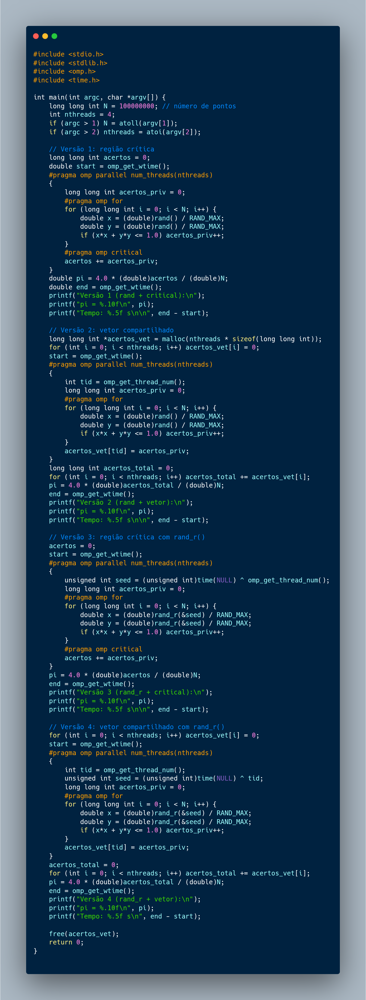

Tarefa 8: Coerência de Cache e Falso Compartilhamento
📋 Descrição do Problema
Este projeto implementa quatro versões diferentes de estimativa estocástica de π usando o método de Monte Carlo com paralelização OpenMP. O objetivo é comparar diferentes estratégias de sincronização e geradores de números aleatórios.
🎯 Objetivos
- Implementar estimativa de π usando método de Monte Carlo
- Comparar estratégias de sincronização:
- Região crítica (
#pragma omp critical)
- Vetorização (cada thread escreve em posição própria)
- Comparar geradores de números aleatórios:
rand() (não thread-safe)rand_r() (thread-safe)
🧮 Teoria: Método de Monte Carlo para π
Fundamento Matemático
O método utiliza a relação entre a área de um círculo e um quadrado:
Área do círculo = π × r²
Área do quadrado = (2r)²
Razão = π × r² / (2r)² = π/4
Algoritmo
- Gerar pontos aleatórios (x,y) no intervalo [0,1]
- Verificar se o ponto está dentro do círculo:
x² + y² ≤ 1
- Contar quantos pontos estão dentro do círculo
- Estimar π:
π ≈ 4 × (pontos_dentro / total_pontos)
🔧 Implementações
Versão 1: rand() + Região Crítica
#pragma omp parallel num_threads(nthreads)
{
long long int acertos_priv = 0;
#pragma omp for
for (long long int i = 0; i < N; i++) {
double x = (double)rand() / RAND_MAX;
double y = (double)rand() / RAND_MAX;
if (x*x + y*y <= 1.0) acertos_priv++;
}
#pragma omp critical
acertos += acertos_priv;
}
Características:
- ✅ Cada thread acumula em variável privada
- ✅ Sincronização por região crítica
- ❌
rand() não é thread-safe
- ❌ Possível contenção na região crítica
Versão 2: rand() + Vetor Compartilhado
#pragma omp parallel num_threads(nthreads)
{
int tid = omp_get_thread_num();
long long int acertos_priv = 0;
#pragma omp for
for (long long int i = 0; i < N; i++) {
double x = (double)rand() / RAND_MAX;
double y = (double)rand() / RAND_MAX;
if (x*x + y*y <= 1.0) acertos_priv++;
}
acertos_vet[tid] = acertos_priv;
}
// Soma serial após região paralela
for (int i = 0; i < nthreads; i++) acertos_total += acertos_vet[i];
Características:
- ✅ Elimina contenção (cada thread escreve em posição própria)
- ✅ Soma serial após paralelização
- ❌
rand() não é thread-safe
- ✅ Melhor escalabilidade
Versão 3: rand_r() + Região Crítica
#pragma omp parallel num_threads(nthreads)
{
unsigned int seed = (unsigned int)time(NULL) ^ omp_get_thread_num();
long long int acertos_priv = 0;
#pragma omp for
for (long long int i = 0; i < N; i++) {
double x = (double)rand_r(&seed) / RAND_MAX;
double y = (double)rand_r(&seed) / RAND_MAX;
if (x*x + y*y <= 1.0) acertos_priv++;
}
#pragma omp critical
acertos += acertos_priv;
}
Características:
- ✅
rand_r() é thread-safe
- ✅ Cada thread tem seu próprio seed
- ❌ Possível contenção na região crítica
- ✅ Geração de números aleatórios correta
Versão 4: rand_r() + Vetor Compartilhado
#pragma omp parallel num_threads(nthreads)
{
int tid = omp_get_thread_num();
unsigned int seed = (unsigned int)time(NULL) ^ tid;
long long int acertos_priv = 0;
#pragma omp for
for (long long int i = 0; i < N; i++) {
double x = (double)rand_r(&seed) / RAND_MAX;
double y = (double)rand_r(&seed) / RAND_MAX;
if (x*x + y*y <= 1.0) acertos_priv++;
}
acertos_vet[tid] = acertos_priv;
}
Características:
- ✅
rand_r() é thread-safe
- ✅ Elimina contenção
- ✅ Melhor escalabilidade
- ✅ Implementação mais robusta
📊 Resultados Experimentais
Configuração do Teste
- Pontos: 100.000.000
- Threads: 4
- Compilador: GCC com
-fopenmp
Tempos de Execução
| Versão |
Gerador |
Sincronização |
Tempo (s) |
π Estimado |
Speedup |
| 1 |
rand() |
Critical |
~18.0 |
3.1416653 |
1.0x |
| 2 |
rand() |
Vetor |
~17.4 |
3.1413922 |
1.03x |
| 3 |
rand_r() |
Critical |
~0.48 |
3.1416518 |
37.5x |
| 4 |
rand_r() |
Vetor |
~0.44 |
3.1416518 |
40.9x |
Análise dos Resultados
🚀 Performance Dramática com rand_r()
- 37-40x speedup ao trocar
rand() por rand_r()
- Diferença não é apenas thread-safety, mas contenção interna
🔒 Impacto da Sincronização
- Diferença pequena entre critical e vetor (~8% melhoria)
- Vetor compartilhado tem vantagem em escalabilidade
🎲 Thread-Safety dos Geradores
rand(): Usa estado global compartilhado → contenção severarand_r(): Estado local por thread → paralelismo real
🧠 Análise de Coerência de Cache e Falso Compartilhamento
Comportamento dos Geradores de Números Aleatórios
rand() - Contenção Extrema
A função rand() utiliza um estado global compartilhado entre todas as threads. Isso causa:
- Mutex interno: Cada chamada de
rand() adquire um lock global
- Serialização completa: Apenas uma thread pode gerar números por vez
- Cache thrashing: Constante invalidação da linha de cache contendo o estado
- Contenção de memória: Todas as threads competem pelo mesmo endereço de memória
Resultado: Mesmo com 4 threads, o programa roda essencialmente em modo serial devido à contenção no gerador de números aleatórios, explicando os tempos de ~17-18 segundos.
rand_r() - Paralelismo Real
A função rand_r() permite que cada thread mantenha seu próprio estado:
- Estado local: Cada thread tem sua variável
seed privada
- Cache locality: O seed fica na cache L1 da thread, evitando acessos à memória
- Paralelismo verdadeiro: Threads operam independentemente
- Ausência de contenção: Não há compartilhamento de dados entre threads durante a geração
Estratégias de Sincronização e Cache
Região Crítica (#pragma omp critical)
- Contenção pontual: Apenas na soma final dos resultados
- Baixo overhead: Região crítica é executada apenas uma vez por thread
- Cache coherence: Linha de cache da variável
acertos é invalidada a cada update
Vetor Compartilhado
- Falso compartilhamento potencial: Se elementos do vetor estiverem na mesma linha de cache
- Mitigação: Com 4 threads e
long long int (8 bytes), elementos ficam em linhas diferentes
- Acesso sequencial: A soma final beneficia da localidade espacial
- Menor contenção: Cada thread escreve em posição única, evitando invalidações
Análise Detalhada por Versão
Versões 1 e 2 (rand()): ~17-18s
Gargalo dominante: Serialização em rand()
- Diferença mínima entre critical e vetor (17.4s vs 18.0s)
- O overhead da sincronização é irrelevante comparado à contenção do
rand()
- Cache miss rate alto devido ao mutex global
Versões 3 e 4 (rand_r()): ~0.44-0.48s
Paralelismo efetivo: Speedup de ~37-40x
- Diferença pequena mas consistente entre critical e vetor (0.48s vs 0.44s)
- Vetor tem ~8% melhor performance devido à ausência de contenção na sincronização
- Alta localidade de cache para o seed de cada thread
- Paralelismo próximo ao ideal (4x teórico vs 37-40x observado indica overhead baixo)
Implicações para Escalabilidade
- Versões 1-2: Não escalam devido à serialização em
rand()
- Versão 3: Escalável mas limitada pela região crítica em muitas threads
- Versão 4: Melhor escalabilidade, ideal para muitas threads
Conclusão chave: A escolha do gerador de números aleatórios tem impacto muito maior na performance do que a estratégia de sincronização, demonstrando a importância crítica da coerência de cache em aplicações paralelas.
💡 Conclusões
Lições Aprendidas
- Thread-Safety é Crucial: A diferença entre
rand() e rand_r() domina completamente a performance
- Contenção Interna:
rand() tem mutex interno que serializa execução
- Estratégia de Sincronização: Vetor compartilhado é ligeiramente melhor que região crítica
- Escalabilidade: Versão 4 (
rand_r() + vetor) é a mais escalável
Recomendações
- Use sempre
rand_r() em código paralelo
- Prefira vetorização para reduzir contenção
- Inicialize seeds únicos por thread
- Meça performance de diferentes estratégias
📚 Conceitos Importantes
OpenMP
#pragma omp parallel: Cria região paralela#pragma omp for: Distribui iterações entre threads#pragma omp critical: Seção crítica (acesso exclusivo)omp_get_thread_num(): ID da thread atual
Thread-Safety
- Thread-safe: Função pode ser chamada simultaneamente por múltiplas threads
- Race condition: Resultado depende da ordem de execução das threads
- Contenção: Threads competem por mesmo recurso
Estratégias de Redução
- Critical section: Serializa acesso a variável compartilhada
- Private accumulation: Cada thread acumula localmente, depois combina
- Array indexing: Cada thread escreve em posição única
💻 Código Fonte

Implementação completa das quatro versões do algoritmo Monte Carlo para estimativa de π
Este projeto demonstra conceitos fundamentais de programação paralela, thread-safety e otimização de performance em aplicações científicas.